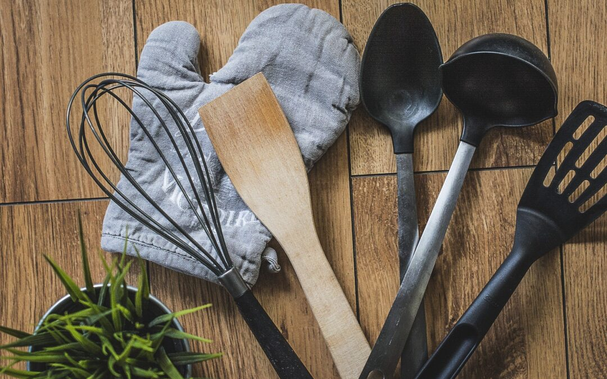
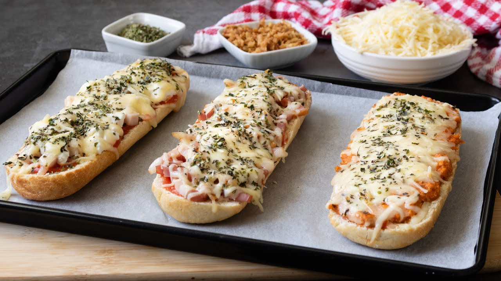

Pa pizza / Panini 
Ingredients:
· 2 Baguets de pa normal.
· 1 Caixa de tomaca fregida "Orlando".
· 1 Sobre de pexuga de pavo sense sal i sense gluten "El pozo" (Tambe pot ser en altres ingredients).
· 1 Borsa de fortmatge rallat o per a gratinar "El caserio".
· Orégan a gust del consumidor.
Nombre de racions: 4 racions.
Utensilis necessaris: Ganivet, cullera, tisores, pinza de cuinar i les mans.
Temps d'elaboració total: 20 a 30 minuts.

passos detallats de la preparació:
1. Talla el pa per la meitat.
2. Obri la caixa de tomaca. Amb tisores.
3. Amb la cullera repartix la tomaca pel pa.
4. Partix la pexuga de pavo a trocets.
5. Afegix damunt el formatge.
6. Finalment, afegix l'orégan.
7. Posar dins del forn.
Presentació final:
Es presenta a la taula en un plat gran amb les rebanades cuinades i calentetes. També posarem les pinzes de cuinar per a servi-se.
Informació extra:
Precalfar el forn a 220 graus, desprès ho posem al forn i anem vegem fins que estiga gratinat el fomatge i cuit el pa.
És un plat fàcil de fer per a totes les edats. Gràcies.
© Guillermo Miralles 2025